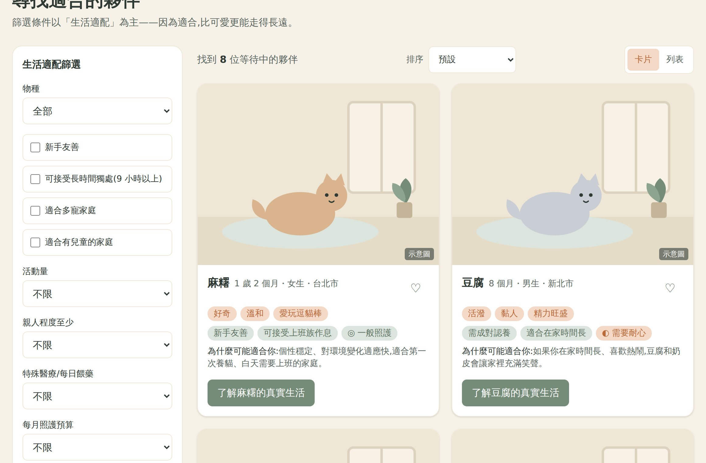
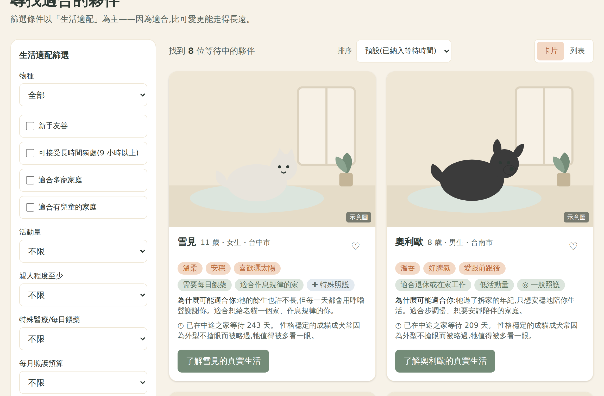
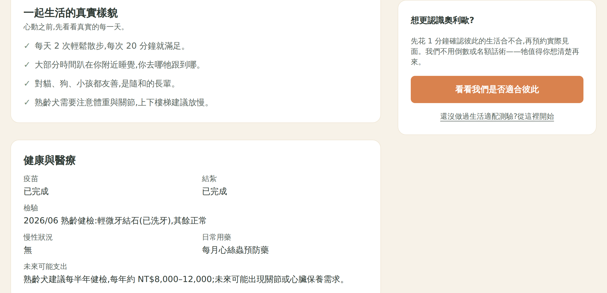
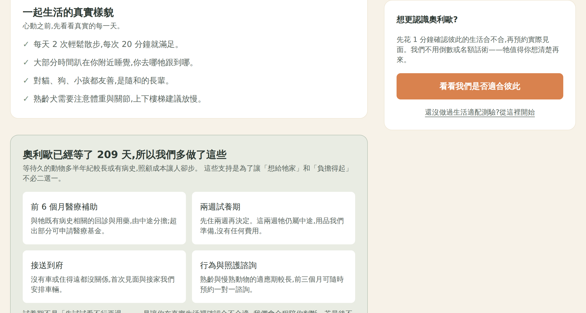
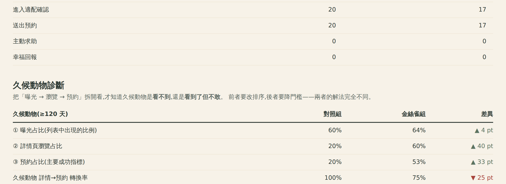
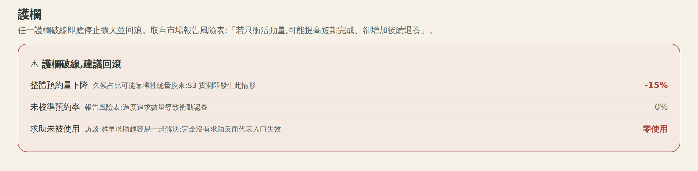
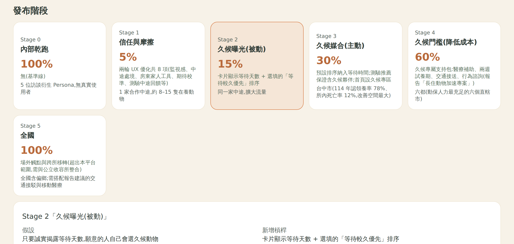

把金絲雀從「流量百分比」重新設計成策略階梯:每一階只加一根槓桿, 逐階測量久候動物在「曝光 → 瀏覽 → 預約」的變化,才能歸因是哪一個介入奏效。
上一版的金絲雀階段只有兩個變數:流量百分比與地理範圍,而且九個旗標一次全開。 這對「提高久候動物領養率」這個目標是不夠的。
九個旗標同時生效,久候占比就算動了,也不知道是哪一個造成的—— 那就沒辦法決定下一步該加碼哪一項、砍掉哪一項。
waitingVisibility 只做兩件事:卡片加一行等待天數、外加一個選填排序。
使用者預設看到的東西完全沒變。這等於把責任丟給使用者:
「資訊給你了,你要不要自己去挑久候的動物?」
流量與地理範圍仍隨信心成長而放寬,但策略槓桿一次只加一根,
上一階的指標有動才往上加。程式上以 RUNG 定義各階新增的旗標,累積生效。
| 階 | 名稱 | 新增槓桿 | 要驗證的假設 |
|---|---|---|---|
| S1 | 信任與摩擦 | 兩輪 UX 優化共 8 項 | 先移除整體阻力,久候動物才有被看見的基礎 |
| S2 | 久候曝光(被動) | 等待天數 + 選填排序 | 只要誠實揭露,願意的人自己會選 |
| S3 | 久候媒合(主動) | 預設排序納入等待時間;測驗推薦保證含久候 | 被動揭露不夠,必須改變預設看到的東西 |
| S4 | 久候門檻(降成本) | 醫療補助、兩週試養、接送、行為諮詢 | 看見了但不敢,是因為照顧成本讓人卻步 |
只看「久候預約占比」無法區分兩種完全不同的病因。因此新增
animal_impression 埋點,把久候動物拆成曝光 → 瀏覽 → 預約三段:
不再等使用者自己改排序。加權公式刻意封頂
(min(waitingDays − 120, 150)),讓等待時間只是加權而非壓過適配——
硬把不合適的動物推到前面會製造錯誤媒合,反而增加退養。


實作市場報告的「長住動物加速專案」:醫療支持、暫托體驗。 只出現在等待 ≥120 天的動物頁,並直接寫出牠等了幾天。


「試養期不是『先試試看不行再退』——是讓你在真實生活裡確認合不合適,我們會全程陪你判斷。 若最後不適合,牠回到中途、你不必有罪惡感。」 支持包的收尾文案。試養期最大的風險是變成退養的方便門,因此措辭必須把它定位成「共同判斷」而非「無責試用」。
每階 5 位 Persona × 2 組。Persona 依訪談設定為只看列表前段、不主動改排序, 這正是報告所說「容易被領養的動物先被帶走」的行為模型。
| 階段(金絲雀組) | 瀏覽到久候 | 預約總數 | 久候預約 | 久候占比 |
|---|---|---|---|---|
| S1 信任與摩擦 | 1 / 5 | 5 | 1 | 20% |
| S2 久候曝光(被動) | 1 / 5 | 5 | 1 | 20% |
| S3 久候媒合(主動) | 5 / 5 | 2 | 2 | 100% |
| S4 久候門檻(降成本) | 5 / 5 | 5 | 5 | 100% |
| 對照組(全程不變) | 1 / 5 | 5 | 1 | 20% |
S2 的久候占比是 20%,和對照組一模一樣。 加了等待天數、加了排序選項,結果沒有任何改變——因為沒有人去動那個排序。 這驗證了 §1.1 的第二個問題:把責任丟給使用者等於沒做。
改成預設排序後,久候動物的瀏覽從 1/5 跳到 5/5,久候預約占比衝到 100%—— 主要成功指標看起來大獲全勝。
但預約總數從 5 掉到 2。5 位 Persona 中有 3 位看到久候動物後直接放棄, 沒有轉去看別的動物。久候占比的提升是靠犧牲總認養量換來的。
如果只盯主要成功指標,S3 會被判定成功並繼續擴大—— 實際上它讓總認養量掉了 60%。 這是把「久候占比」當單一目標函數的必然風險:提高占比最快的方法就是減少分母。
加上支持包後,預約總數回到 5,且 5 筆全是久候動物。 原本因為照顧成本而放棄的三位 Persona,在看到醫療補助與兩週試養後改變了決定。 這說明排序與降門檻必須成對出現——S3 負責讓人看見,S4 負責讓人敢。

S3 的失敗模式是這次測試最有價值的產出。它不是靠推理想出來的,是跑出來才看到的, 因此必須把它固化成程式裡的護欄,而不是報告裡的一句提醒。
實作於 guardrails(canary, control),直接比較兩組的預約總數。
這條護欄的存在理由就是 S3——沒有它,S3 會通過所有既有檢查。
同時把 S3 的出場條件改寫為「整體預約量未下降超過 10% (S3 單獨上線時實測會破線)」,並在 S4 加上 「整體預約量回到 S2 水準(S4 的作用是把 S3 讓出去的量補回來)」。


| 階 | 範圍 | Rollout | 出場條件 |
|---|---|---|---|
| S1 | 1 家合作中途 | 5% | 測驗完成率高於對照組;未校準預約率 ≤20%;無新增 P1 錯誤 |
| S2 | 同一家中途 | 15% | 久候預約占比高於對照組;排序使用率 ≥10%(實測遠低於此 → 直接進 S3) |
| S3 | 台中市 | 30% | 久候曝光占比 ≥40%;久候預約占比高於 S2;整體預約量未下降 >10% |
| S4 | 六都 | 60% | 久候詳情頁轉換率高於 S3;整體預約量回到 S2 水準;180 天追蹤完成率 ≥85%;六個月退養率 <5% |
| S5 | 全國含偏鄉 | 100% | — |
| 縣市 | 認領養率 | 所內死亡率 | 判斷 |
|---|---|---|---|
| 新北市 | 94% | 3% | 接近天花板;且 2025 已自行上線 AI 媒合會混淆效果 |
| 臺北市 | 90% | 10% | 同樣接近上限 |
| 臺中市 | 78% | 12% | 改善空間最大、難送養個案最集中,且已有送養專車與友善商家認養站可承接 |
| 高雄市 | 70% | 3% | 備選 |
willAcceptLongWait 與 needsSupportToAccept 是我依訪談寫定的,
因此 S3 掉量與 S4 補回,在機制上是被設計出來的。可重現性
ux-test/canary-ladder.mjs(四階實測,EXPORT= 匯出事件流)、
ux-test/canary-stage0.mjs(埋點驗證)、
ux-test/round2-verify.mjs(兩輪 UX 優化迴歸,32 項全數通過)。
儀表板在 /#/canary,可切換階段與強制分組。
本報告截圖皆為同一網址、同一視窗尺寸,僅切換階段或分組的實際畫面,未經修圖;
儀表板載入的是本次實測產生的 574 筆事件。